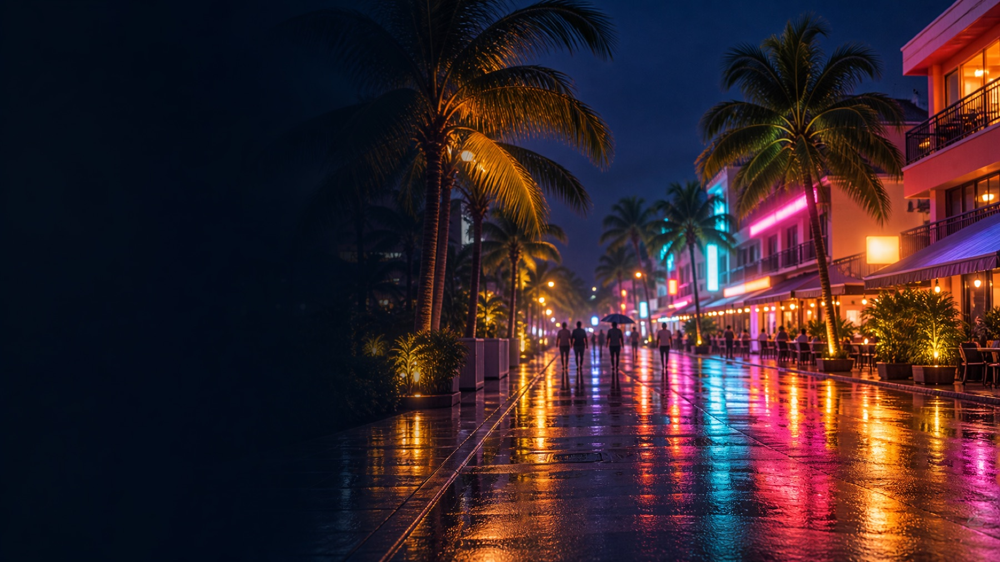

앙헬레스 밤문화, 지역부터 알면 절반은 끝나요
업데이트 2026-11-09

클락·앙헬레스의 밤은 크게 세 곳으로 나뉘어요. 밤새 시끌벅적한 워킹스트리트(필즈 애비뉴), 한식당과 노래방이 모인 프렌드십 하이웨이 코리아타운, 호텔과 카지노가 있는 조용한 클락 프리포트. 어디에 묵고 어디서 시작하느냐에 따라 같은 밤이 완전히 달라져요.
세 지역 한눈에 비교
| 워킹스트리트 | 코리아타운 | 클락 프리포트 | |
|---|---|---|---|
| 분위기 | 가장 시끌벅적, 새벽까지 | 한국 거리 같은 느낌 | 조용하고 깔끔 |
| 많은 곳 | 라이브바·스포츠바·펍·성인 대상 바 | 한식당·고깃집·카페·KTV·펍 | 카지노 호텔·호텔 바·리조트 식당 |
| 잘 맞는 일행 | 친구·동료 단체 | 처음 온 사람, 한식 먹고 노래방까지 | 가족·부부, 다음 날 이른 골프 |
| 붐비는 시간 | 밤 9시 이후 | 저녁 식사 시간부터 | 저녁 식사 시간, 카지노는 늦게까지 |
워킹스트리트(필즈 애비뉴): 앙헬레스 밤의 한복판
발리바고에 있는 필즈 애비뉴의 보행자 거리예요. 저녁 6시부터 아침 6시까지 차가 못 들어오고, 밤 9시가 넘으면 사람이 가장 많아져요. 필리핀 밴드 라이브바와 큰 화면 스포츠바가 유명하고, 성인 대상 바도 많은 거리라 일행 분위기에 맞게 골라 들어가는 게 좋아요. 워킹스트리트 자세히 보기
프렌드십 하이웨이 코리아타운: 한식 먹고 노래방까지
발리바고에서 이어지는 필암 프렌드십 하이웨이(Fil-Am Friendship Highway)와 주변 골목이 앙헬레스 코리아타운이에요. 필리핀 일간지 인콰이어러는 약 6km 구간에 식당이 200곳 넘게 있고 대부분 한식이라고 소개했어요. 저녁엔 삼겹살·국밥 같은 한식, 그다음엔 한국 노래 기계가 있는 KTV나 펍으로 이어지는 동선이 많아요.
- 같은 보도에서 가방 날치기를 조심하라고 당부했어요. 가방은 차도 반대쪽 어깨에, 휴대폰은 길가 쪽 손에 들고 걷지 않기
- 한국어 간판이 많아서 처음 온 사람도 길 찾기가 쉬워요
클락 프리포트: 조용한 밤, 카지노 호텔
공항과 골프장, 국제 브랜드 호텔이 모여 있는 경제특구예요. 밤 분위기는 세 곳 중 가장 조용하고, 늦게까지 여는 곳은 주로 카지노 호텔 안 식당과 바예요. 다음 날 이른 티타임이 있거나 가족과 함께라면 이쪽이 편해요. 프리포트 안에서도 호텔 사이는 걸어 다니기 멀어서 밤엔 차량으로 움직이는 게 보통이에요. 클락 카지노 정보 보기
시간대별로 이렇게 움직여요
| 시간 | 많이 하는 것 |
|---|---|
| 오후 3~6시 | 골프 끝나고 숙소에서 쉬기, 마사지. KTV는 보통 이 시간쯤 문을 열어요 |
| 저녁 6~9시 | 코리아타운 한식, 클락 프리포트 호텔 식당 |
| 밤 9시~자정 | 워킹스트리트 라이브바·스포츠바, KTV |
| 자정 이후 | 새벽까지 하는 바·카지노. 이 시간엔 돌아갈 차량을 미리 정해 두기 |
KTV 영업시간은 업소들이 공개한 정보를 보면 보통 오후 2~4시에 열고 자정~새벽 2시에 닫는 곳이 많아요(2026년 11월 기준).
어디에 묵으면 좋을까
- 밤 위주 일정: 발리바고 쪽 숙소면 워킹스트리트·코리아타운이 가까워요
- 골프 + 조용한 밤: 클락 프리포트 호텔, 또는 일행이 많으면 풀빌라
- 단체(4명 이상): 풀빌라 + 기사 포함 차량 한 대로 세 지역을 다 오가는 게 가장 편해요
지역 고르기 어렵다면 카톡으로
- 일행 성향에 맞는 지역·동선 (밤 위주 / 골프 위주)
- 코리아타운에서 늦게까지 하는 한식당
- 숙소 ↔ 워킹스트리트·코리아타운 밤 차량 (기사 포함)
- ○○ 고깃집 · 새벽 ○시까지
자주 묻는 질문
앙헬레스 밤문화는 어디서 시작하면 돼요?
처음이면 코리아타운에서 한식으로 저녁을 먹고, 밤 9시 이후 워킹스트리트로 넘어가는 동선이 가장 무난해요.
앙헬레스 코리아타운은 어디예요?
발리바고에서 이어지는 필암 프렌드십 하이웨이와 주변 골목이에요. 한식당, 고깃집, 카페, 한국식 KTV가 모여 있어요.
클락 프리포트 안에도 밤에 갈 곳이 있나요?
있어요. 다만 대부분 카지노 호텔 안 식당·바라서 분위기는 조용한 편이에요.
세 지역을 하루에 다 갈 수 있나요?
차로 10~20분씩이라 가능해요. 차량 한 대로 묶으면 기다리는 시간 없이 움직일 수 있어요.
출처: Inquirer Lifestyle 「Authentic feel and tastes in Angeles City’s Korea Town」, Fields Avenue(Angeles City) 위키백과, 앙헬레스 업소 공개 정보(2026년 11월 확인).